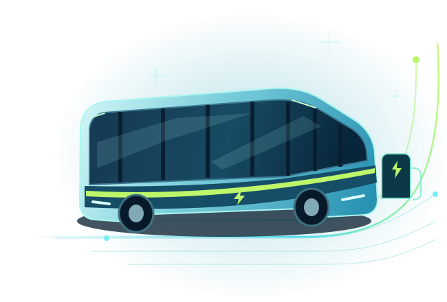
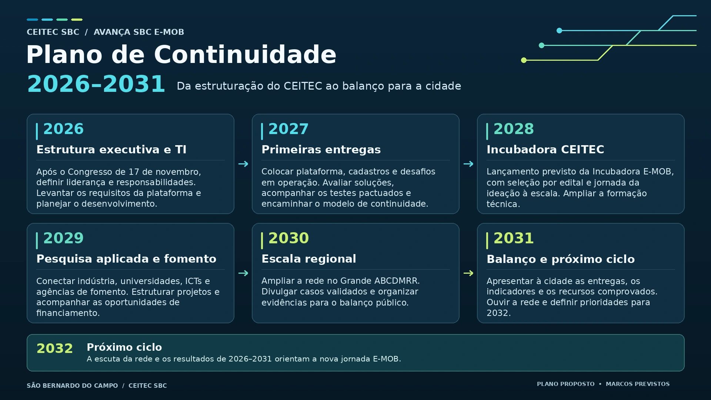

Definir a liderança do programa
Organizar as contribuições do Congresso, distribuir responsabilidades e preparar o plano de trabalho para o início de 2027.
AVANÇA SBC E-MOB PLANO 2026–2031
O CEITEC começa conectando desafios reais da indústria às soluções das startups. Dessa rede nasce a proposta de tornar São Bernardo referência em eletromobilidade e em sua cadeia produtiva no Grande ABCDMRR.

01 / PLANO DE CONTINUIDADE
Selecione um ano ou use as setas. As oportunidades e formas de participação abaixo acompanham o ano selecionado.
Organizar as contribuições do Congresso, distribuir responsabilidades e preparar o plano de trabalho para o início de 2027.
Definir o que a primeira versão precisa oferecer e organizar a sequência de desenvolvimento e implantação.
02 / OPORTUNIDADES PARA SÃO BERNARDO
Quatro agendas de trabalho que saem do Congresso e ganham continuidade no CEITEC.
Aproximar fornecedores locais de novos mercados e das demandas de quem produz veículos, componentes e soluções.
Conectar escolas técnicas e universidades às competências que a indústria vai precisar em áreas como eletrificação e segurança.
Buscar soluções para reaproveitar baterias e materiais, reduzir perdas e usar recursos com mais eficiência.
Mapear demandas por recarga, energia e soluções de gestão de frotas para orientar estudos e testes.
03 / PARTICIPAÇÃO
O CEITEC aproxima quem tem um problema de quem pode ajudar a resolvê-lo.
Identifique um problema da operação, reúna evidências do impacto e defina o resultado esperado. Essa é a base para o CEITEC qualificar um desafio.
Prepare uma descrição da solução, o estágio de desenvolvimento e evidências de aplicação. As condições de participação serão informadas nas chamadas de cada desafio.
Identifique competências, laboratórios e projetos que possam apoiar testes, pesquisa aplicada e formação técnica.
Acompanhe a divulgação de eventos, trilhas de formação e resultados do programa. As oportunidades serão anunciadas à medida que as parcerias e atividades forem confirmadas.
04 / PARCERIAS
Três formas de apoiar o desenvolvimento da eletromobilidade em São Bernardo, com vigência inicial de 12 meses e possibilidade de prorrogação.
Esta é uma versão de apresentação. O cadastro de apoiadores será disponibilizado na plataforma operacional.
05 / PLANO EM UMA IMAGEM
Visão geral do ciclo, do Congresso à operação continuada. Os marcos de cada ano estão na linha do tempo.

Versão de demonstração. Use apenas dados fictícios. As alterações ficam nesta sessão e são apagadas ao recarregar a página.